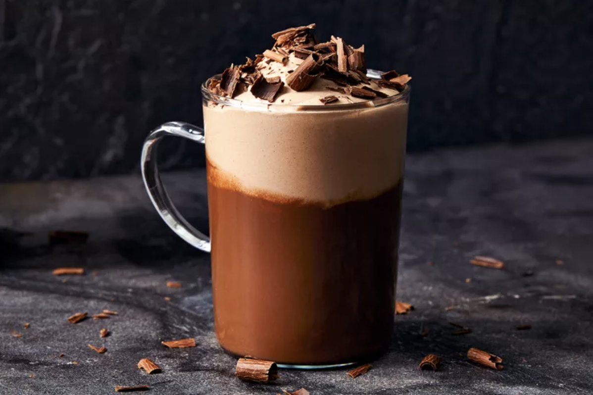

Creamy Homemade Hot Chocolate. A combination of cocoa powder and chocolate chips make this hot chocolate extra flavorful and delicious! Ready in minutes.
- Cocoa powder
- Sugar
- Chocolate
- Milk
- Vanilla extract
- In a saucepan, whisk together the sugar and cocoa powder. Add milk, chocolate chunks, and vanilla.
- Place over medium heat until steaming, whisking constantly to avoid burning the chocolate.
- Cool to desired serving temperature and serve with your favorite toppings.